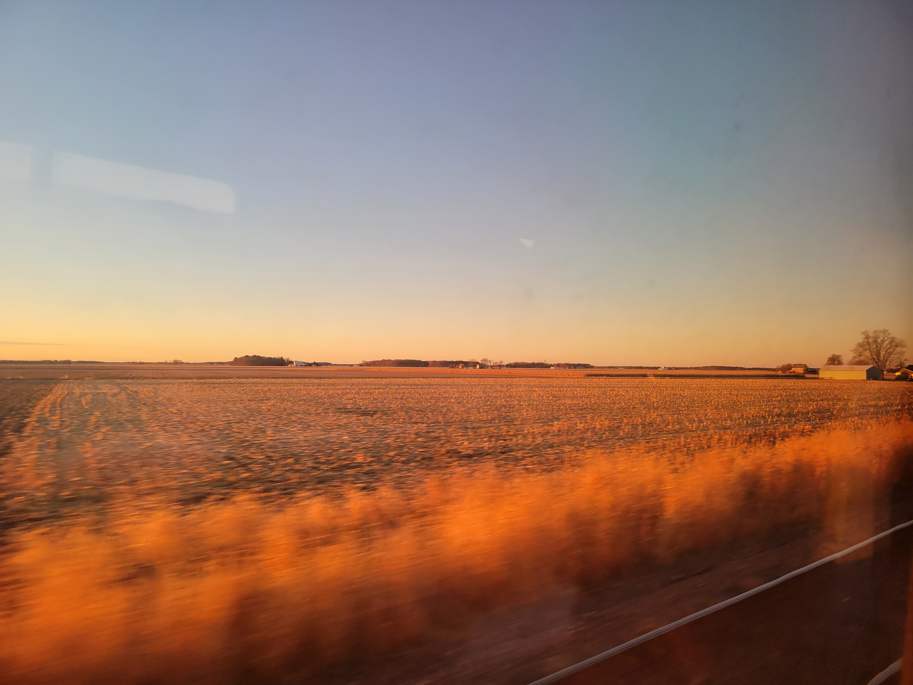
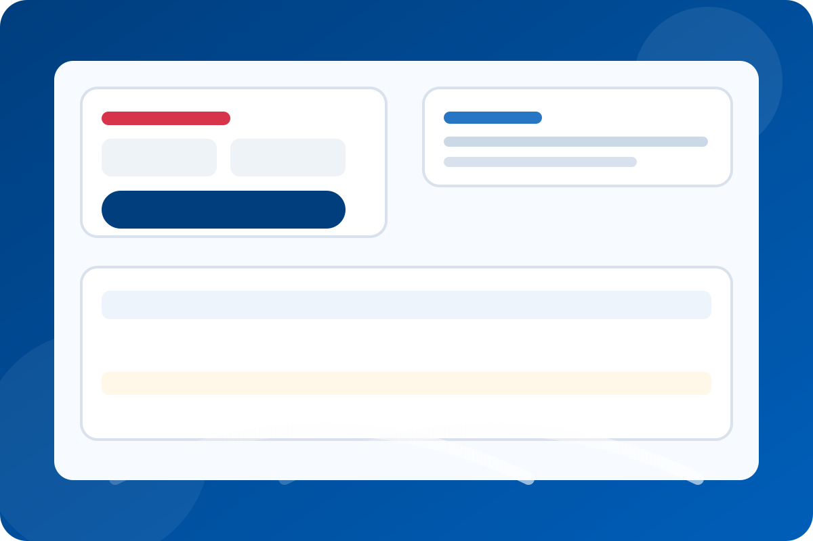
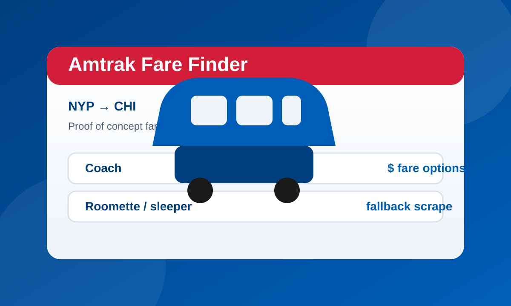

Featured projects
This landing page highlights the work and stories I want front and center, from the rail trip that started the site to newer transit-focused tools and prototypes.

Crossing the USA by Rail
Notes, photos, and observations from a proof-of-concept trip across the country by train.
View the project →
Train Trip Planner
A hosted browser edition of my Amtrak planning tool for exploring direct routes, connections, and custom stopovers.
Launch the planner →
Amtrak Fare Finder
A prototype for finding available Amtrak fares for New York to Chicago by starting with public data sources and falling back to booking-page scraping.
View the project →